전기산업기사 (2016-05-08 기출문제)
1과목: 전기자기학
1. 온도가 20℃일 때 저항률의 온도계수가 가장 작은 금속은?
- 금
- 철
- 알루미늄
- 백금
(정답률: 72%)

2. 두 자성체 경계면에서 정자계가 만족하는 것은?
- 자계의 법선성분이 같다.
- 자속밀도의 접선성분이 같다.
- 자속은 투자율이 작은 자성체에 모인다.
- 양측 경계면상의 두 점 간의 자위차가 같다.
(정답률: 66%)
3. 100mH의 자기 인덕턴스를 갖는 코일에 10A의 전류를 통할 때 축적되는 에너지는 몇 J인가?
- 1
- 5
- 50
- 1000
(정답률: 73%)
4. 비유전율 Es에 대한 설명으로 옳은 것은?
- Es의 단위는 C/m 이다.
- Es는 항상 1보다 작은 값이다.
- Es는 유전체의 종류에 따라 다르다.
- 진공의 비유전율은 0이고, 공기의 비유전율은 1이다.
(정답률: 77%)
5. 전자장에 대한 설명으로 틀린 것은?
- 대전된 입자에서 전기력선이 발산 또는 흡수한다.
- 전류(전하이동)는 순환형의 자기장을 이루고 있다.
- 자석은 독립적으로 존재하지 않는다.
- 운동하는 전자는 자기장으로부터 힘을 받지 않는다.
(정답률: 67%)
6. 10-5Wb와 1.2×10-5Wb의 점자극을 공기중에서 2cm 거리에 놓았을 때 극간에 작용하는 힘은 약 몇 N인가?
- 1.9×10-2
- 1.9×10-3
- 3.8×10-2
- 3.8×10-3
(정답률: 57%)
7. 진공 중에서 1㎌의 정전용량을 갖는 구의 반지름은 몇 km인가?
- 0.9
- 9
- 90
- 900
(정답률: 71%)
8. 표피 효과에 관한 설명으로 옳은 것은?
- 주파수가 낮을수록 침투깊이는 작아진다.
- 전도도가 작을수록 침투깊이는 작아진다.
- 표피효과는 전계 혹은 전류가 도체 내부로 들어갈수록 지수함수적으로 적어지는 현상이다.
- 도체 내부의 전계의 세기가 도체 표면의 전계 세기의 1/2까지 감쇠되는 도체 표면에서 거리를 표피 두께라 한다.
(정답률: 75%)
9. 그림과 같은 환상철심에 A, B의 코일이 감겨있다. 전류 I가 120 A/s로 변화할 때, 코일 A에 90V, 코일 B에 40V의 기전력이 유도된 경우, 코일 A의 자기인덕턴스 L1[H]와 상호인덕턴스 M[H]의 값은 얼마인가?
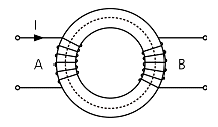
- L1=0.75, M=0.33
- L1=1.25, M=0.7
- L1=1.75, M=0.9
- L1=1.95, M=1.1
(정답률: 73%)
10. 각종 전기기기에 접지하는 이유로 가장 옳은 것은?
- 편의상 대지는 전위가 영상 전위이기 때문이다.
- 대지는 습기가 있기 때문에 전류가 잘 흐르기 때문이다.
- 영상전하로 생각하여 땅속은 음(-)전하이기 때문이다.
- 지구의 정전용량이 커서 전위가 거의 일정하기 때문이다.
(정답률: 80%)
11. 대지 중의 두 전극사이에 있는 어떤 점의 전계의 세기가 6[V/cm], 지면의 도전율이 10-4℧/㎝]일 때 이 점의 전류밀도는 몇 A/cm2인가?
- 6×10-4
- 6×10-3
- 6×10-2
- 6×10-1
(정답률: 77%)
12. 간격 d[m]로 평행한 무한히 넓은 2개의 도체판에 각각 단위면적마다 +σ[C/m2], -σ[C/m2]의 전하가 대전되어 있을 때 두 도체 간의 전위차는 몇 V인가?
- 0
- ∞
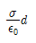
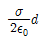
(정답률: 50%)
13. 대전도체의 성질로 가장 알맞은 것은?
- 도체 내부에 정전에너지가 저축된다.
- 도체 표면의 정전응력은
 이다.
이다. - 도체 표면의 전계의 세기는
 이다.
이다. - 도체의 내부전위와 도체 표면의 전위는 다르다.
(정답률: 54%)
14. 그림과 같이 도선에 전류 I[A]를 흘릴 때 도선의 바로 밑에 자침이 이 도선과 나란히 놓여 있다고 하면 자침의 N극의 회전력의 방향은?
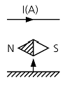
- 지면을 뚫고 나오는 방향이다.
- 지면을 뚫고 들어가는 방향이다.
- 좌측에서 우측으로 향하는 방향이다.
- 우측에서 좌측으로 향하는 방향이다.
(정답률: 64%)
15. 영구자석의 재료로 사용되는 철에 요구되는 사항으로 옳은 것은?
- 잔류 자속밀도는 작고 보자력이 커야 한다.
- 잔류 자속밀도와 보자력이 모두 커야 한다.
- 잔류 자속밀도는 크고 보자력이 작아야 한다.
- 잔류 자속밀도는 커야 하나, 보자력은 0이어야 한다.
(정답률: 68%)
16. 공간 도체 내에서 자속이 시간적으로 변할 때 성립되는 식은?
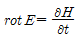
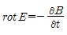
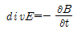
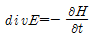
(정답률: 65%)
17. 점전하 Q[C]에 의한 무한평면 도체의 영상전하는?
- Q[C]보다 작다.
- Q[C]보다 크다.
- -Q[C]와 같다.
- 0이다.
(정답률: 81%)
18. 환상 솔레노이드 코일에 흐르는 전류가 2[A]일 때 자로의 자속이 1×10-2[Wb]라고 한다. 코일의 권수를 500회라 할 때 이 코일의 자기 인덕턴스는 몇 H인가?
- 2.5
- 3.5
- 4.5
- 5.5
(정답률: 79%)
19. 자속밀도가 B인 곳에 전하 Q, 질량 m인 물체가 자속밀도 방향과 수직으로 입사한다. 속도를 2배로 증가시키면, 원운동의 주기는 몇 배가 되는가?(오류 신고가 접수된 문제입니다. 반드시 정답과 해설을 확인하시기 바랍니다.)
- 1/2
- 1
- 2
- 4
(정답률: 33%)
20. 그림과 같은 영역 y≤0은 완전 도체로 위치해 있고, 영역 y≥0은 완전 유전체로 위치해 있을 때, 만약 경계 무한 평면의 도체면상에 면전하 밀도 ps=2[nC/m2]가 분포되어 있다면 P점(-4,1,-5)[m]의 전계의 세기[V/m]는?
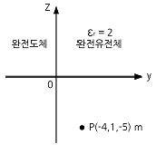
- 18πay
- 36πay
- -54πay
- 72πay
(정답률: 69%)
2과목: 전력공학
21. 인입되는 전압이 정정값 이하로 되었을 때 동작하는 것으로서 단락 고장 검출 등에 사용되는 계전기는?
- 접지 계전기
- 부족전압 계전기
- 역전력 계전기
- 과전압 계전기
(정답률: 78%)
22. 배전선로용 퓨즈(power fuse)는 주로 어떤 전류의 차단을 목적으로 사용하는가?
- 충전전류
- 단락전류
- 부하전류
- 과도전류
(정답률: 78%)
23. 접촉자가 외기(外氣)로부터 격리되어 있어 아크에 의한 화재의 염려가 없으며 소형, 경량으로 구조가 간단하고 보수가 용이하며 진공 중의 아크 소호 능력을 이용하는 차단기는?
- 유입 차단기
- 진공 차단기
- 공기 차단기
- 가스 차단기
(정답률: 75%)
24. 유효낙차 75m, 최대사용 수량 200m3/s, 수차 및 발전기의 합성 효율이 70%인 수력 발전소의 최대 출력은 약 몇 MW 인가?
- 102.9
- 157.3
- 167.5
- 177.8
(정답률: 59%)
25. 어떤 가공선의 인덕턴스가 1.6mH/㎞이고, 정전용량이0.008㎌/㎞일 때 특성임피던스는 약 몇 Ω인가?
- 128
- 224
- 345
- 447
(정답률: 62%)
26. 서울과 같이 부하밀도가 큰 지역에서는 일반적으로 변전소의 수와 배전거리를 어떻게 결정하는 것이 좋은가?
- 변전소의 수를 감소하고 배전거리를 증가한다.
- 변전소의 수를 증가하고 배전거리를 감소한다.
- 변전소의 수를 감소하고 배전거리도 감소한다.
- 변전소의 수를 증가하고 배전거리도 증가한다.
(정답률: 74%)
27. 중성점 접지방식에서 직접 접지 방식을 다른 접지방식과 비교하였을 때 그 설명으로 틀린 것은?
- 변압기의 저감 절연이 가능하다.
- 지락 고장시의 이상 전압이 낮다.
- 다중접지 사고로의 확대 가능성이 대단히 크다.
- 보호 계전기의 동작이 확실하여 신뢰도가 높다.
(정답률: 56%)
28. 단선식 전력선과 단선식 통신선이 그림과 같이 근접되었을 때, 통신선의 정전유도전압 E0는?
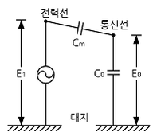
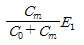
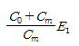
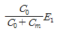
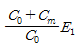
(정답률: 62%)
29. 3상 3선식 복도체 방식의 송전선로를 3상 3선식 단도체 방식 송전선로와 비교한 것으로 알맞은 것은? (단, 단도체의 단면적은 복도체 방식 소선의 단면적 합과 같은 것으로 한다.)
- 전선의 인덕턴스와 정전용량은 모두 감소한다.
- 전선의 인덕턴스와 정전용량은 모두 증가한다.
- 전선의 인덕턴스는 증가하고, 정전용량은 감소한다.
- 전선의 인덕턴스는 감소하고, 정전용량은 증가한다.
(정답률: 64%)
30. 송전방식에서 선간전압, 선로 전류, 역률이 일정할 때(3상 3선식/단상 2선식)의 전선 1선당의 전력비는 약 몇 %인가?
- 87.5
- 94.7
- 115.5
- 141.4
(정답률: 49%)
31. 터빈 발전기의 냉각방식에 있어서 수소냉각 방식을 채택하는 이유가 아닌 것은?
- 코로나에 의한 손실이 적다.
- 수소 압력의 변화로 출력을 변화시킬 수 있다.
- 수소의 열전도율이 커서 발전기 내 온도 상승이 저하한다.
- 수소 부족시 공기와 혼합 사용이 가능하므로 경제적이다.
(정답률: 68%)
32. 그림과 같은 열사이클은?
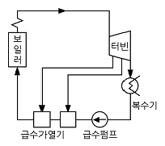
- 재생 사이클
- 재열 사이클
- 카르노 사이클
- 재생재열 사이클
(정답률: 68%)
33. 그림과 같이 지지점 A, B, C에는 고저차가 없으며, 경간 AB와 BC 사이에 전선이 가설되어 그 이도가 12cm 이었다. 지금 경간 AC의 중점이 지지점 B에서 전선이 떨어져서 전선의 이도가 D로 되었다면 D는 몇 cm 인가?
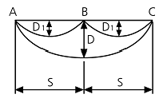
- 18
- 24
- 30
- 36
(정답률: 73%)
34. 송배전 선로에서 내부 이상전압에 속하지 않는 것은?
- 개폐 이상전압
- 유도뢰에 의한 이상전압
- 사고시의 과도 이상전압
- 계통 조작과 고장시의 지속 이상전압
(정답률: 72%)
35. 고압 배전선로의 선간전압을 3300V에서 5700V로 승압하는 경우, 같은 전선으로 전력손실을 같게 한다면 약 몇 배의 전력[kW]을 공급할 수 있는가?(오류 신고가 접수된 문제입니다. 반드시 정답과 해설을 확인하시기 바랍니다.)
- 1
- 2
- 3
- 4
(정답률: 58%)
36. 설비용량 800kW, 부등률 1.2, 수용률 60%일 때, 변전시설 용량은 최저 약 몇 kVA 이상이어야 하는가? (단, 역률은 90%이상 유지되어야 한다.)
- 450
- 500
- 550
- 600
(정답률: 60%)
37. 소호리액터 접지방식에 대하여 틀린 것은?
- 지락 전류가 적다.
- 전자유도 장애를 경감할 수 있다.
- 지락 중에도 송전이 계속 가능하다.
- 선택지락 계전기의 동작이 용이하다.
(정답률: 61%)
38. 전력 원선도에서 알 수 없는 것은?
- 조상 용량
- 선로 손실
- 송전단의 역률
- 정태안정 극한 전력
(정답률: 50%)
39. 200kVA 단상 변압기 3대를 △결선에 의하여 급전하고 있는 경우 1대의 변압기가 소손되어 V결선으로 사용하였다. 이때의 부하가 516kVA라고 하면 변압기는 약 몇 %의 과부하가 되는가?
- 119
- 129
- 139
- 149
(정답률: 53%)
40. 피뢰기의 제한전압이란?
- 피뢰기의 정격전압
- 상용주파수의 방전개시 전압
- 피뢰기 동작 중 단자전압의 파고치
- 속류의 차단이 되는 최고의 교류전압
(정답률: 69%)
3과목: 전기기기
41. 6600/210V, 10kVA 단상 변압기의 퍼센트 저항강하는 1.2%, 리액턴스 강하는 0.9%이다. 임피던스 전압[V]은?
- 99
- 81
- 65
- 37
(정답률: 52%)
42. 직류 전동기의 속도제어 방법에서 광범위한 속도제어가 가능하며, 운전 효율이 가장 좋은 방법은?
- 계자 제어
- 전압 제어
- 직렬 저항 제어
- 병렬 저항 제어
(정답률: 77%)
43. 정격전압 200V, 전기자 전류 100A 일 때 1000rpm으로 회전하는 직류 분권 전동기가 있다. 이 전동기의 무부하 속도는 약 몇 rpm인가? (단, 전기자 저항은 0.15Ω, 전기자 반작용은 무시한다.)
- 981
- 1081
- 1100
- 1180
(정답률: 67%)
44. 구조가 회전 계자형으로 된 발전기는?
- 동기 발전기
- 직류 발전기
- 유도 발전기
- 분권 발전기
(정답률: 72%)
45. 화학공장에서 선로의 역률은 앞선 역률 0.7이었다. 이 선로에 동기 조상기를 병렬로 결선해서 과여자로 하면 선로의 역률은 어떻게 되는가?
- 뒤진 역률이며 역률은 더욱 나빠진다.
- 뒤진 역률이며 역률은 더욱 좋아진다.
- 앞선 역률이며 역률은 더욱 좋아진다.
- 앞선 역률이며 역률은 더욱 나빠진다.
(정답률: 51%)
46. 코일피치와 자극피치의 비를 β라 하면 기본파 기전력에 대한 단절계수는?
- sinβπ
- cosβπ
- sinβπ/2
- cosβπ/2
(정답률: 62%)
47. 2대의 같은 정격의 타여자 직류발전기가 있다. 그 정격은 출력 10kW, 전압 100V, 회전속도 1500rpm이다. 이 2대를 카프법에 의해서 반환 부하시험을 하니 전원에서 흐르는 전류는 22A이었다. 이 결과에서 발전기의 효율은 약 몇 %인가? (단, 각 기의 계자 저항손을 각각 200W라고 한다.)
- 88.5
- 87
- 80.6
- 76
(정답률: 32%)
48. 변압기 1차측 공급전압이 일정할 때, 1차코일 권수를 4배로 하면 누설리액턴스와 여자전류 및 최대 자속은?(단, 자로는 포화상태가 되지 않는다.)
- 누설리액턴스 = 16, 여자전류 = 1/4, 최대자속 = 1/16
- 누설리액턴스 = 16, 여자전류 = 1/16, 최대자속 = 1/4
- 누설리액턴스 = 1/16, 여자전류 = 4, 최대자속 = 16
- 누설리액턴스 = 16, 여자전류 = 1/16, 최대자속 =4
(정답률: 56%)
49. 유도 전동기에서 인가전압이 일정하고 주파수가 정격 값에서 수 % 감소할 때 나타나는 현상 중 틀린 것은?
- 철손이 증가한다.
- 효율이 나빠진다.
- 동기 속도가 감소한다.
- 누설 리액턴스가 증가한다.
(정답률: 50%)
50. 4극 7.5kW, 200V, 60Hz인 3상 유도전동기가 있다. 전부하에서의 2차 입력이 7950W이다. 이 경우의 2차 효율은 약 몇 %인가?(단, 기계손은 130W이다.)
- 92
- 94
- 96
- 98
(정답률: 54%)
51. 유도 전동기에서 여자전류는 극수가 많아지면 정격 전류에 대한 비율이 어떻게 변하는가?
- 커진다.
- 불변이다.
- 적어진다.
- 반으로 줄어든다.
(정답률: 47%)
52. 직류 전동기의 발전제동 시 사용하는 저항의 주된 용도는?
- 전압강하
- 전류의 감소
- 전력의 소비
- 전류의 방향전환
(정답률: 53%)
53. 브러시를 이동하여 회전속도를 제어하는 전동기는?
- 반발 전동기
- 단상 직권 전동기
- 직류 직권 전동기
- 반발 기동형 단상 유도 전동기
(정답률: 42%)
54. 100kVA, 6000/200V, 60Hz이고 %임피던스 강하 3%인 3상 변압기의 저압측에 3상 단락이 생겼을 경우의 단락전류는 약 몇 A인가?
- 5650
- 9623
- 17000
- 75000
(정답률: 51%)
55. 직류기의 전기자 권선 중 중권 권선에서 뒤피치가 앞피치보다 큰 경우를 무엇이라 하는가?
- 진권
- 쇄권
- 여권
- 장절권
(정답률: 60%)
56. 전기설비 운전 중 계기용 변류기(CT)의 고장 발생으로 변류기를 개방할 때 2차측을 단락해야 하는 이유는?
- 2차 측의 절연보호
- 1차 측의 과전류 방지
- 2차 측의 과전류 보호
- 계기의 측정 오차 방지
(정답률: 75%)
57. 동기 발전기의 병렬운전에서 일치하지 않아도 되는 것은?
- 기전력의 크기
- 기전력의 위상
- 기전력의 극성
- 기전력의 주파수
(정답률: 63%)
58. 단상 유도 전동기를 기동 토크가 큰 것부터 낮은 순서로 배열한 것은?
- 모노사이클릭형→반발 유도형→반발 기동형→ 콘덴서 기동형→분상 기동형
- 반발 기동형→반발 유도형→모노사이클릭형→ 콘덴서 기동형→분상 기동형
- 반발 기동형→반발 유도형→콘덴서 기동형→분상 기동형→모노사이클릭형
- 반발 기동형→분상 기동형→콘덴서 기동형→ 반발 유도형→모노사이클릭형
(정답률: 74%)
59. 일정한 부하에서 역률 1로 동기 전동기를 운전하는 중 여자를 약하게 하면 전기자 전류는?
- 진상전류가 되고 증가한다.
- 진상전류가 되고 감소한다.
- 지상전류가 되고 증가한다.
- 지상전류가 되고 감소한다.
(정답률: 45%)
60. 8극 60Hz의 유도 전동기가 부하를 연결하고 864 rpm으로 회전할 때, 54.134 kg ㆍ m의 토크를 발생 시 동기와트는 약 몇 kW인가?(문제 오류로 실제 시험에서는 모두 정답 처리 되었습니다. 여기서는 가답안으로 발표된 2번을 누르면 정답 처리 됩니다.)
- 48
- 50
- 52
- 54
(정답률: 70%)
4과목: 회로이론
61. 그림과 같은 반파 정현파의 실효값은?
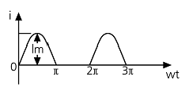
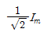
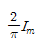
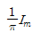
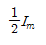
(정답률: 54%)
62. 저항 R=5000Ω, 정전용량 C=20㎌가 직렬로 접속된 회로에 일정전압 E=100V를 가하고 t=0에서 스위치를 넣을 때 콘덴서 단자전압 V[V]을 구하면? (단, t=0에서 콘덴서 전압은 0이다.)
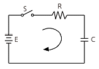
- 100(1-e10t)
- 100e10t
- 100(1-e-10t)
- 100e-10t
(정답률: 56%)
63. 저항 R인 검류계 G에 그림과 같이r1인 저항을 병렬로, 또r2인 저항을 직렬로 접속하였을 때 A, B 단자 사이의 저항을 R과 같게 하고 또한 G에 흐르는 전류를 전 전류의 1/n로 하기 위한 r1[Ω]의 값은?
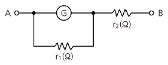
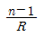
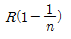
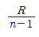
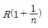
(정답률: 41%)
64. 두 개의 회로망 N1과 N2가 있다. a-b단자, a’-b’단자의 각각의 전압은 50V, 30V이다. 또, 양단자에서 N1, N2를 본 임피던스가 15Ω과 25Ω이다. a-a’, b-b’를 연결하면 이때 흐르는 전류는 몇 A인가?
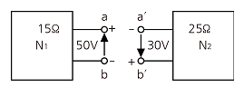
- 0.5
- 1
- 2
- 4
(정답률: 60%)
65. 다음 회로에서 I를구하면 몇 A인가?
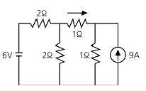
- 2
- -2
- -4
- 4
(정답률: 55%)
66. 그림과 같은 회로의 전달함수는? (단, 초기조건은 0이다.)
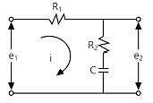
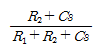
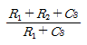
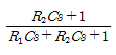
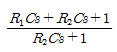
(정답률: 70%)
67. 휘스톤 브리지에서 RL에 흐르는 전류(I)는 약 몇 mA인가?
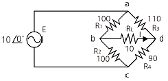
- 2.28
- 4.57
- 7.84
- 22.8
(정답률: 45%)
68. Y 결선된 대칭 3상 회로에서 전원 한상의 전압이
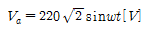
일 때 선간전압의 실효값은 약 몇 V인가?- 220
- 310
- 380
- 540
(정답률: 64%)
69. 다음과 같은 파형 v(t)를 단위계단 함수로 표시하면 어떻게 되는가?
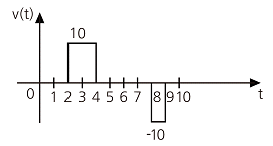
- 10u(t-2)+10u(t-4)+10u(t-8)+10u(t-9)
- 10u(t-2)-10u(t-4)-10u(t-8)-10u(t-9)
- 10u(t-2)-10u(t-4)+10u(t-8)-10u(t-9)
- 10u(t-2)-10u(t-4)-10u(t-8)+10u(t-9)
(정답률: 56%)
70. 그림과 같이 T형 4단자 회로망의 A, B, C, D 파라미터 중 B값은? (문제 오류로 실제 시험에서는 모두 정답처리 되었습니다. 여기서는 4번을 누르면 정답 처리 됩니다.)
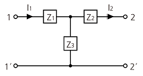
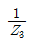
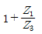
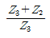
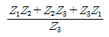
(정답률: 71%)
71. 다음과 같은 회로의 전달함수
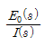
는?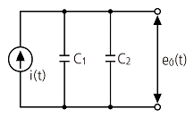
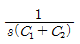
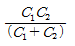
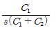
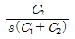
(정답률: 36%)
72. 인덕턴스 L[H] 및 커패시턴스 C[F]를 직렬로 연결한 임피던스가 있다. 정저항 회로를 만들기 위하여 그림과 같이 L 및 C의 각각에 서로 같은 저항 R[Ω]을 병렬로 연결할 때 R[Ω]은 얼마인가? (단, L=4mH, C=0.1㎌이다.)
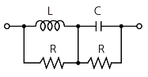
- 100
- 200
- 2×10-5
- 0.5×10-2
(정답률: 60%)
73. 그림은 상순이 a-b-c인 3상 대칭회로이다. 선간전압이 220V이고 부하 한상의 임피던스가 100∠60°Ω일 때 전력계 Wa의 지시값[W]은?
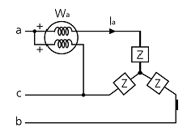
- 242
- 386
- 419
- 484
(정답률: 33%)
74. 다음 방정식에서 를 구하면?
(정답률: 48%)
75. 3상 회로의 선간전압이 각각 80V, 50V, 50V일 때의 전압의 불평형률[%]은?
- 39.6
- 57.3
- 73.6
- 86.7
(정답률: 32%)
76. 비대칭 다상 교류가 만드는 회전 자계는?
- 교번 자기장
- 타원형 회전 자기장
- 원형 회전자기장
- 포물선 회전 자기장
(정답률: 60%)
77. 그림과 같은 L형 회로의 4단자 A, B, C, D 정수 중 A는?
(정답률: 53%)
78. 그림과 같은 높이가 1인 펄스의 라플라스 변환은?
(정답률: 52%)
79. 비정현파에 있어서 정현 대칭의 조건은?
- f(t)=f(-t)
- f(t)=-f(t)
- f(t)=-f(t+π)
- f(t)=-f(-t)
(정답률: 59%)
80. C[F]인 콘덴서에 q[C]의 전하를 충전하였더니 C의 양단 전압이 e[V]이었다. C에 저장된 에너지는 몇 J인가?
- qe
- Ce
- 1/2Cq2
- 1/2Ce2
(정답률: 58%)
5과목: 전기설비기술기준 및 판단 기준
81. 과전류 차단기를 시설할 수 있는 곳은?
- 접지 공사의 접지선
- 다선식 전로의 중성선
- 단상 3선식 전로의 저압측 전선
- 접지공사를 한 저압 가공전선로의 접지측 전선
(정답률: 56%)
82. 계통 연계하는 분산형 전원을 설치하는 경우에 이상 또는 고장 발생 시 자동적으로 분산형 전원을 전력계통으로부터 분리하기 위한 장치를 시설해야 하는 경우가 아닌 것은?
- 역률 저하 상태
- 단독 운전 상태
- 분산형 전원의 이상 또는 고장
- 연계한 전력 계통의 이상 또는 고장
(정답률: 48%)
83. 호텔 또는 여관 각 객실의 입구등을 설치할 경우 몇 분 이내에 소등되는 타임 스위치를 시설해야 하는가?
- 1
- 2
- 3
- 10
(정답률: 65%)
84. 특고압 가공 전선로의 지지물 양쪽의 경간의 차가 큰 곳에 사용되는 철탑은?
- 내장형 철탑
- 인류형 철탑
- 각도형 철탑
- 보강형 철탑
(정답률: 75%)
85. 고압 가공전선 상호간이 접근 또는 교차하여 시설되는 경우, 고압 가공전선 상호간의 이격거리는 몇 cm 이상이어야 하는가? (단, 고압 가공전선은 모두 케이블이 아니라고 한다. )
- 50
- 60
- 70
- 80
(정답률: 47%)
86. 전기설비기술기준의 안전원칙에 관계없는 것은?
- 에너지 절약등에 지장을 주지 아니하도록 할 것
- 사람이나 다른 물체에 위해 손상을 주지 않도록 할 것.
- 기기의 오동작에 의한 전기 공급에 지장을 주지 않도록 할 것
- 다른 전기설비의 기능에 전기적 또는 자기적인 장해를 주지 아니하도록 할 것
(정답률: 67%)
87. 철탑의 강도 계산에 사용하는 이상시 상정하중의 종류가 아닌 것은?
- 수직하중
- 좌굴하중
- 수평 횡하중
- 수평 종하중
(정답률: 72%)
88. 타냉식 특고압용 변압기에는 냉각장치에 고장이 생긴 경우를 대비하여 어떤 장치를 하여야 하는가?
- 경보장치
- 속도 조정장치
- 온도 시험 장치
- 냉매 흐름 장치
(정답률: 71%)
89. 저압 옥내배선의 사용전압이 220V인 출퇴표시등 회로를 금속관 공사에 의하여 시공하였다. 여기에 사용되는 배선은 단면적이 몇 mm2 이상의 연동선을 사용하여도 되는가?
- 1.5
- 2.0
- 2.5
- 3.0
(정답률: 37%)
90. 고압 가공전선이 철도를 횡단하는 경우 레일면상에서 몇 m 이상으로 유지되어야 하는가?
- 5.5
- 6
- 6.5
- 7.0
(정답률: 67%)
91. 저압 옥내배선에 사용하는 연동선의 최소 굵기는 몇 mm2 이상인가?
- 1.5
- 2.5
- 4.0
- 6.0
(정답률: 61%)
92. 가로등, 경기장, 공장, 아파트 단지 등의 일반조명을 위하여 시설하는 고압 방전등은 그 효율이 몇 lm/W 이상의 것이어야 하는가?
- 30
- 50
- 70
- 100
(정답률: 55%)
93. 전력보안 통신설비로 무선용 안테나 등의 시설에 관한 설명으로 옳은 것은?
- 항상 가공전선로의 지지물에 시설한다.
- 피뢰침 설비가 불가능한 개소에 시설한다.
- 접지와 공용으로 사용할 수 있도록 시설한다.
- 전선로의 주위 상태를 감시할 목적으로 시설한다.
(정답률: 62%)
94. 금속제 외함을 가진 저압의 기계기구로서 사람이 쉽게 접촉할 우려가 있는 곳에 시설하는 것에 전기를 공급하는 전로에 지락이 생겼을 때에 자동적으로 차단하는 장치를 설치하여야 한다. 사용전압이 몇 V를 초과하는 기계기구의 경우인가?(관련 규정 개정전 문제로 여기서는 기존 정답인 4번을 누르면 정답 처리됩니다. 자세한 내용은 해설을 참고하세요.)
- 25
- 30
- 50
- 60
(정답률: 66%)
95. 특고압 가공전선이 건조물과 1차 접근상태로 시설되는 경우를 설명한 것 중 틀린 것은?
- 상부 조영재와 위쪽으로 접근 시 케이블을 사용하면 1.2m 이상 이격거리를 두어야 한다.
- 상부 조영재와 옆쪽으로 접근 시 특고압 절연전선을 사용하면 1.5m 이상 이격거리를 두어야 한다.
- 상부 조영재와 아래쪽으로 접근 시 특고압 절연전선을 사용하면 1.5m 이상 이격거리를 두어야 한다.
- 상부 조영재와 위쪽으로 접근 시 특고압 절연전선을 사용하면 2.0m 이상 이격거리를 두어야 한다.
(정답률: 43%)
96. 특고압 가공전선이 삭도와 제2차 접근상태로 시설할 경우 특고압 가공전선로에 적용하는 보안공사는?
- 고압 보안공사
- 제 1종 특고압 보안공사
- 제 2종 특고압 보안공사
- 제 3종 특고압 보안공사
(정답률: 60%)
97. 가공 전선로의 지지물에 취급자가 오르고 내리는데 사용하는 발판 볼트 등은 지표상 몇 m 미만에 시설하여서는 아니되는가?
- 1.2
- 1.8
- 2.2
- 2.5
(정답률: 74%)
98. 합성수지관 공사 시 관 상호간 및 박스와의 접속은 관에 삽입하는 깊이를 관 바깥지름의 몇 배 이상으로 하여야 하는가? (단, 접착제를 사용하지 않는 경우이다.)
- 0.5
- 0.8
- 1.2
- 1.5
(정답률: 59%)
99. 가반형의 용접전극을 사용하는 아크 용접장치의 용접 변압기의 1차측 전로의 대지전압은 몇 V 이하이어야 하는가?
- 220
- 300
- 380
- 440
(정답률: 69%)
100. 고저압 혼촉에 의한 위험방지 시설로 가공공동지선을 설치하여 시설하는 경우에 각 접지선을 가공 공동지선으로부터 분리하였을 경우의 각 접지선과 대지간의 전기저항 값은 몇 Ω 이하로 하여야 하는가?
- 75
- 150
- 300
- 600
(정답률: 58%)